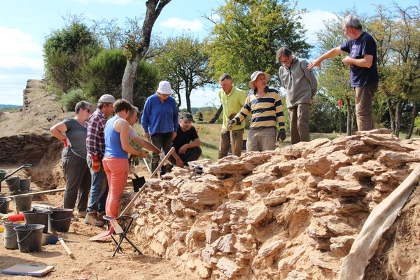

Le château est redécouvert à la fin des années 1990. Le degré d’arasement des vestiges et la végétation qui le recouvre alors rendent très difficile la perception du site.
En 2002, le site est inscrit à l’inventaire général du patrimoine culturel de Bretagne
